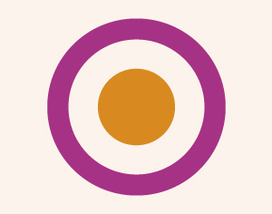

Devising og viewpoints med Kristina Kjeldsberg - 3 dager. FULLT-VENTELISTE
- Dato:
- 30.09.2013 til 02.10.2013
- Start kl :
- 10:00
- Slutt kl :
- 21:00
- Pris:
- 650,-
- Adresse:
- Norsk Skuespillersenter, Welhavensgate 1, Oslo
 "Viewpoints is a philosophy translated into a technique for training performers, building ensemble and creating movment for stage.” Ann Bogart & Tina Landau
{kind=link}
Regissør Kristina Kjeldsberg (Riksteatret, Hålogaland Teater, utdannet fra KHiO) har med stor suksess ledet kurs i Viewpoints i Göteborg. Nå kommer kurset til Oslo!
Kursdager
Mandag 30. september 17.00 – 21.00 (KVELD)
Tirsdag 1. oktober 10.00 – 16.00 (DAG)
Onsdag 2. oktober 10.00 – 16.00 (DAG)
Om kurset
Kristina sier: "Viewpoint og devised arbeid i teateret er intet nytt. Det tilhører de naturlige prinsippene for bevegelse, tid og rom; hvordan vi beveger oss satt i system. Viewpoint som et system man kan lære seg er et godt redskap for alle teaterkunstnere. Jeg har brukt det i mitt arbeide med skuespillere, dansere, dramatikere, lysdesignere og scenografer.
Kurset går ut på å bruke seg selv med de muligheter og eventuelt begrensninger som finnes i hvert enkelt individ. Det er et fysisk kurs hvor man hele tiden jobber på gulvet med hele seg. Min erfaring er at det for de fleste oppleves fritt og veldig kreativt.
Det er uvurderlig godt for å skape et nytt ensamble som skal jobbe sammen og ikke har gjort det før –ganske raskt blir gruppen ristet sammen og kan jobbe som et team, med felles referanser.
Det er også et veldig godt redskap for å skape orginalt materiale på scenen."
Oppbygning av kurset
- Grunntrening; grunnprinsippene introduseres
- Komposisjonsøvelser, begynnende komposisjonstrening
- Små enheter av scenemateriale skapes
- Små demo visninger (som kun vises for gruppen)
- Oppsummering
Om Kristina Kjeldsberg
Kristina er utdannet ved regi linjen på KHIO/Teaterhøgskolen i Oslo (2005-2010), og har siden regissert for blant annet Riksteatret, Det Norske Teatret og Hålogaland Teater. Hun har en cand.mag fra NTNU i teater og litteratur (1992-97). Hun arbeidet i flere år som frilance skuespiller, regissør og produsent ved bl.a. Det Åpne Teater, Haugesund Teater og Thesbie Teatret. Hun har vært daglig leder for Norsk Dramatikkfestival ved Det Norske Teatret og har hatt flere oppdrag for næringslivet bl.a. for Dinamo, Telenor, NHO og NORAD. Kristina innledet sin master i regi høsten 2008 i Helsinki på Teater Viirus med å sette opp "Undantaget" løst basert på B.Brechts "reglen og unntaket". Denne forestillingen ble invitert til Tammerförs internationale teaterfestival (09) og Theaterszene europa i Köln (10).
Pris for medlemmer av NSF: 550,-